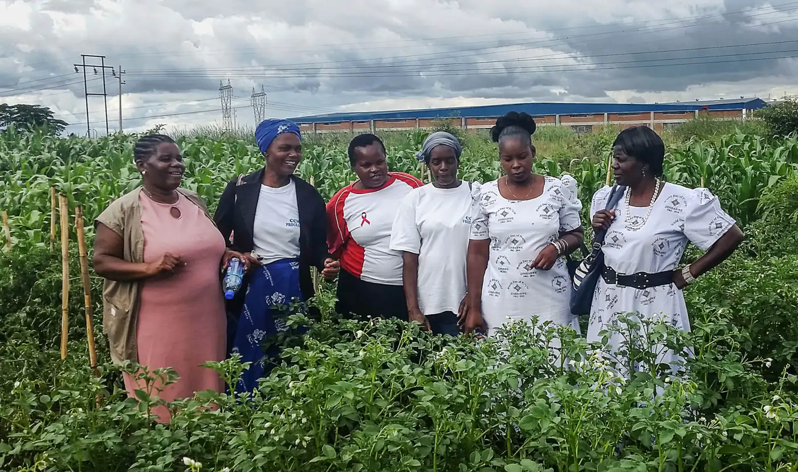
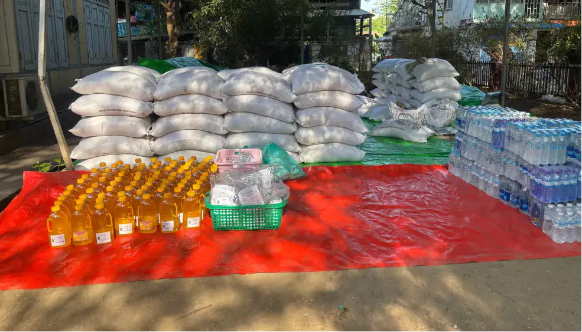
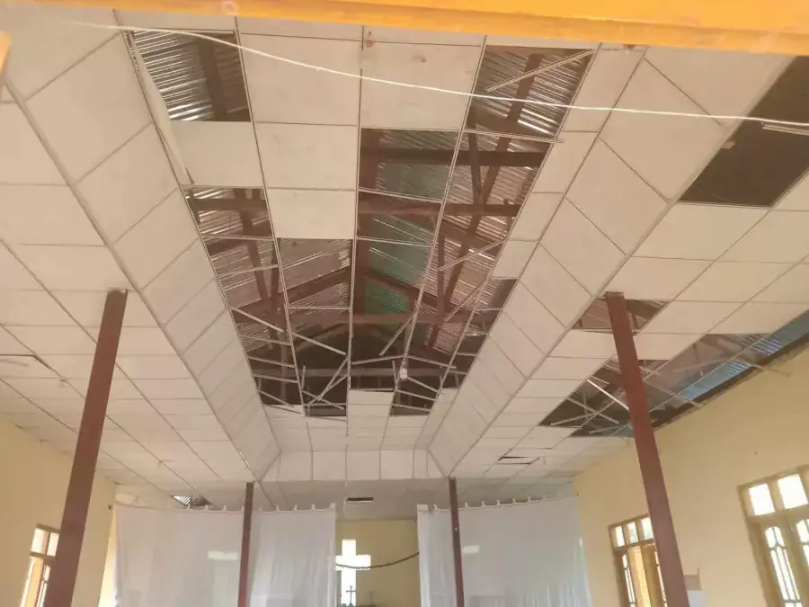
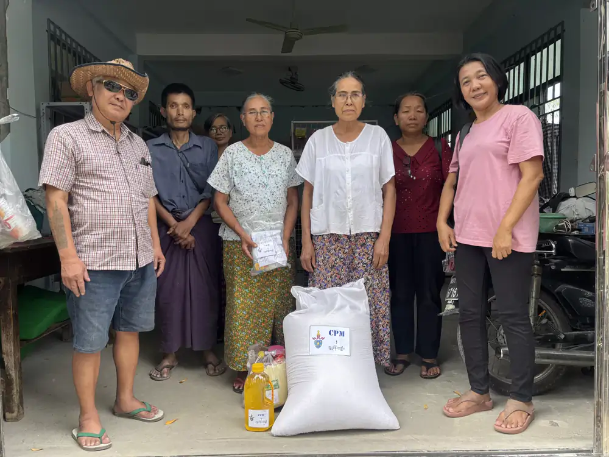

Our five priority work areas, and the approaches we use in all of them, were set through global and regional consultations.
The approaches we use in every area

Resilience and disaster response
Churches are often first responders in a disaster, welcoming and caring for those affected. As integral parts of their communities, local churches can act fast, mobilising their own resources. They are there before external agencies arrive and long after they have left.
We believe the Gospel continues to have transformational power, enabling flourishing communities where people thrive, not just survive. We see this particularly clearly in the Asset-Based Church and Community Transformation being carried out across the Anglican Communion.
We live in a world of breathtaking beauty, astounding abundance and intricate interconnection. However, the integrity of creation is under threat. The life systems of the earth are under severe strain from the triple environmental crises of climate change, biodiversity loss and pollution.
Across the Anglican Communion, churches are responding in many ways: welcoming and supporting migrants and refugees, advocating for their rights, supporting survivors of human trafficking and working to prevent it, and tackling the root causes of poverty and conflict that make people vulnerable to exploitation.
Tackling inequality is at the heart of all we do. We particularly focus on gender justice, addressing the legacy of colonialism and slavery, listening to Indigenous perspectives and youth empowerment.
In everything we do, we seek to be “midwives of hope” as we pursue a Kingdom vision that is about good news for the poor, abundant life for all and a flourishing planet.
Our work is grounded in the Anglican Five Marks of Mission. The Alliance was born of the 2008 Lambeth Conference and belongs to everyone in the worldwide Anglican family committed to working for a world free of poverty and injustice.
We invite you to spend a few minutes praying with us for…
Current and ongoing situations across the world
The many places where violence and conflict continue to destroy lives, livelihoods, communities and habitats, especially remembering Gaza and the West Bank, Sudan, South Sudan and the Democratic Republic of Congo.
This month's focus: resilience and disaster response
Please pray for all communities facing rapid- or slow-onset disasters such as floods, droughts, wildfire, storms or famine.
Pray for courage and resilience in the face of overwhelming challenges, and for churches to respond well, even while experiencing the disaster themselves.
Pray for those on the Resilience Course and for our Partners in Resilience and Response initiative.
Please pray for Nicholas Pande as he leads this area of the Anglican Alliance's work.
This month's focus partner: Hope Africa
Hope Africa is the Social Development Programme of the Anglican Church of Southern Africa. Its work focuses on building sustainable partnerships, capacity building, public policy and advocacy, and providing support and guidance to community projects.
Nothing can separate us from the love of God in Christ Jesus our Lord.
Romans 8:39
Who we are
Our small staff team is based in eight countries. Regional facilitators work in Asia, the Pacific, Latin America, the Caribbean and the Middle East, and in Africa we work in close collaboration with the Council of Anglican Provinces of Africa (CAPA).
Regional facilitators
Clifton NeddCaribbean FacilitatorGrenada
Joel KellingMiddle East FacilitatorJordan
Gay ManadonEast Asia FacilitatorPhilippines
Karen ChutePacific FacilitatorFiji
Advisers and leads
Paulo UetiTheological Adviser and Latin America DirectorBrazil
Grace KaisoSenior AdviserUganda
Nicholas PandeResilience and Disaster Response Lead, and Communion Forest Global FacilitatorKenya
London
Rob DawesExecutive Director
Elizabeth PerryProgrammes Director
Mandy MarshallGender Justice Director
Amy BishopProgramme Officer
Africa
We work through close collaboration with the Council of Anglican Provinces of Africa (CAPA), across its provinces.
When you give, you help churches build resilience to disasters, amplify marginalised voices, tackle gender-based injustice, develop emerging leaders and grow the Communion Forest.
Gifts are processed by Stewardship, a UK Christian charity. You'll pick the same fund again on their secure page.
Anglican agencies
Anglican churches and agencies are at the forefront of relief work, working together to meet the needs of people affected by natural disasters and conflict. Find an agency by where it's based or the work it does.
Anglican Crisis Relief, Outreach and Support is the crisis relief ministry of the Diocese of Singapore’s Diocesan Mission Board, giving a Christian response to places affected by disasters.
The Anglican Church of Canada’s agency for sustainable development and relief, working to increase healthy pregnancies and births, reduce gender inequality, relieve hunger and break the cycle of poverty.
The development arm of the Anglican Church of Kenya, working on community development, advocacy, institutional strengthening, and research and knowledge management.
An overseas relief and development agency of the Anglican Church of Australia, inspired by a vision for a peaceful, just and sustainable world for all.
The development arm of the Episcopal Church in the Philippines, helping communities mobilise their own assets and resources to move from survival to self-reliance.
An international relief and development agency of The Episcopal Church, rebuilding after disasters and working with partners on lasting solutions to poverty, hunger and disease.
Savings groups, literacy, numeracy and business skills training through the Anglican Church in eight countries, reaching over 260,000 families since the 1998 Lambeth Conference.
Over four million members working in their own communities to promote stable marriages, family life and the protection of children through praying, enabling and campaigning.
Service Anglican pour le Développement Communautaire builds community resilience through agriculture, the environment, community health, youth and education, and gender, justice and peace.
The Zambia Anglican Council Outreach Programme is the development organisation of the Anglican Church in Zambia, mobilising resources for vulnerable communities.
Thriving communities
Visit website
No agencies match. Try another country or work area.
For agencies
Agencies keep their own profile up to date: what they work on, where, any current appeal and the right contact. Changes go to the Alliance to check before they appear.
Recovery and rebuildingExample page, built from the Alliance's report of 4 June 2025
Myanmar earthquake
28 March 2025 · Dioceses of Mandalay and Toungoo · Church of the Province of Myanmar
7.7magnitude
3,000+people died
4,000+people injured
Thousandsof households displaced

Relief supplies ready to hand out
What's happened so far
A magnitude 7.7 earthquake strikes Myanmar. The epicentre is in the Diocese of Mandalay, and the Diocese of Toungoo is also badly hit. Houses, shops, churches, bridges, roads and water supplies are damaged.
Bishop David Nyi Nyi Naing and diocesan staff in Mandalay start handing out water and food packages of rice, curry, mosquito nets and other essentials. Young volunteers travel to Mandalay to help.
The Anglican Alliance brings the Church and key partners together to hear what's needed and plan the response. The Anglican Board of Mission (Anglicans in Development, Australia) takes the lead on an emergency appeal.
The Church provides healthcare kits, cash transfers, food packages and water to thousands of people, including the most vulnerable households, and installs water purifiers in three Anglican churches.
The Church moves into rehabilitation and reconstruction, with partners alongside. Read the full update

Damage caused to buildings

Archdeacon Joseph Yin Oo and volunteers
How the Alliance is helping
The Alliance reached out in solidarity and prayer, brought the Church and its partners together within a week, and continues to accompany the Church through rehabilitation and reconstruction as part of its resilience and disaster response work.
“The Church of the Province of Myanmar has shown strength and resilience in the aftermath of the earthquake. Through their coordinated efforts with the Anglican Alliance and other partners, they have provided essential relief and supplies to those most in need.”
Nicholas Pande, Resilience and Disaster Response Lead
A course that gives Anglicans the skills and knowledge to set up a development project in their own community: from coming up with an idea, to planning, to managing a project, to monitoring and evaluating it.
The stages of setting up and running a project are in the outer ring. They follow in order and look different for every project. The principles of good practice in the inner ring apply at every stage, to every project.
Stage 1 of 10
Pray, study and dream
Module 1 · Dreaming dreams
Thinking about community
Serving the wider community through the Five Marks of Mission
Community mapping: assets and challenges
Problem and solution trees
Coming up with a project idea
Stages
Principles at every stage
Each module has a Bible study, around seven workbook activities and a short quiz. There's no exam: once your mentor confirms your work, the Anglican Alliance awards a certificate.
What participants say
“It’s a tool to get the right knowledge at the right level and on the right focus area into a community, to help change take place in people’s livelihoods.”
Agents of Change is taught through in-person training, run with Anglican dioceses, development departments and theological colleges. If you’d like to host a training, contact the programme director, Dr Elizabeth Perry.
agentsofchange@anglicanalliance.org
We aren’t able to take on distance learners at the moment, but please get in touch if you’re interested.
Agents of Change was originally written for the Anglican Alliance by the Open University. Its global roll-out has been supported by Trinity Church Wall Street.